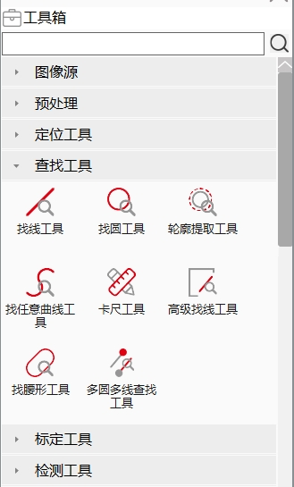
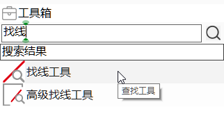

Hộp công cụ
Cung cấp nhiều công cụ thị giác có thể cấu hình, có thể kéo thả để thêm vào sơ đồ quy trình;
- Tìm theo phân loại công cụ: Nhấp vào danh mục để hiển thị các công cụ thuộc danh mục đó ở thanh bên dưới

- Tìm theo tên công cụ: Đối với công cụ không rõ thuộc danh mục nào, có thể tìm bằng tên công cụ trong ô tìm kiếm; khi rê chuột vào sẽ hiển thị danh mục tương ứng.
